Smart Imaging
Imager is engineered with smart imaging at its core. To facilitate live data processing and real-time feedback, we utilize specialized Python modules termed "Smart Programs."
A Smart Program provides a declarative framework for defining how the smart imaging backend interacts with the Haskell orchestration layer. Before implementing these pipelines, the Python environment must be configured.
Setting Up Python
There are two primary methods for configuring Python to work with smart imaging pipelines.
Using the Embedded Python Distribution
For a streamlined setup, Imager includes an embedded Python 3.13 distribution. This is ideal if you prefer not to manage a standalone Python installation on your system or wish to avoid environment compatibility issues.
The Python interpreter is located at:
python\python.exe
You can customize the embedded distribution by installing any required packages. To modify the environment:
- Navigate to the directory where
Imager.exeis located. - Open PowerShell or a Command Prompt.
- Execute the following command (using
seabornas an example):
python\python.exe -m pip install seaborn
This will install the package directly into the shipped Python distribution, making it available for your smart imaging pipelines.
Use Your Own Virtual Environment
If you prefer to use a custom virtual environment, you must first install the necessary dependencies to ensure compatibility with the smart imaging server.
- Create a virtual environment: Navigate to the directory where
Imager.exeis located and run:
python -m venv imager-venv
- Activate the environment: In PowerShell, activate your new environment using:
imager-venv\Scripts\activate
- Install dependencies: The required packages for the smart imaging server are located in the
SmartProgramPythonfolder. Install them by running:
python -m pip install -r SmartProgramServer\requirements.txt
- Configure the Python Path: Once the installation is complete, you must point Imager to your custom interpreter. Open
Config.jsonand update thepythonpathfield:
{
"pythonpath": "C:/PATH_TO_YOUR_VIRTUAL_ENV/Scripts/python.exe"
}
With Python successfully configured, you are ready to begin implementing smart imaging pipelines.
Smart Imaging Concept
To implement effective smart imaging pipelines, it is essential to understand the architecture of the feedback loop.
The Experimental Challenge
Consider the following workflow requirements:
- A 30 mm dish contains a high density of cells.
- Only a small fraction of these cells express a specific protein of interest.
- The goal is to monitor only the expressing cells over an extended time-lapse.
The Manual Approach (Inefficient): You would perform a "Relative Stage Loop" to scan the dish, manually identify and save the coordinates of expressing cells, and then initiate a new "Time Lapse" experiment using that static list of positions.
The Smart Imaging Approach (Automated):
- Scan: Execute a Relative Stage Loop.
- Analyze: For every field of view (FOV) detected, apply real-time image processing to identify cells of interest.
- Act: Automatically pass the coordinates of identified cells into a subsequent Stage Loop.
To execute these real-time decisions, Imager utilizes Python as an external, configurable agent.
Implementation Architecture
The integration between Imager and Python follows a specific logic:
- Inputs: Every Detection element in your experiment tree can be linked to a function within your Python Smart Program.
- Outputs: Every Loop element in the experiment tree can be linked to the output of a Python Smart Program.
- Configuration: Users define exactly which Acquisition/Detector pairs are streamed to specific parts of the Python code.
- Execution: During a measurement, images are streamed to Python as they are acquired. The Smart Program initializes upon receiving the first image.
- Decisions: When the experiment reaches a linked Loop, the Smart Program provides a Decision. This decision dynamically populates the loop parameters (e.g., specific stage positions or iteration counts).
This interaction allows the experiment to "self-correct" or "self-guide" based on the data it sees in real time.
Loading your first smart program
From the Python perspective, a Smart Program is a class that inherits from SmartImagerProgram and SmartImagerBase.
Smart Program Template
Below is an example of a program template. This file is located at /SmartProgramPython/user_programs/DemoProgram.py within the main Imager directory.
### All necessary imports. Do not change this. You can add your imports here as well
from core.smartprogram import *
from core.baseprogram import *
from models.decisions import *
from models.messagepackdata import ImagerData
from models.parameter_model import *
from models.smartprogramdefinition import EquipmentParameter
#############################################
class DemoProgram(SmartImagerBase,metaclass=SmartImagerProgram):
def __init__(self):
"""Instantiates a program. Here you can define parameters that are visible in the GUI"""
self.scalar_parameter = Scalar(value = 0.5, annotation = "Scalar parameter")
self.boolean_parameter = Boolean(value = True, annotation = "Boolean parameter")
self.integer_parameter = Integer(value =10, annotation = "Integer parameter")
self.text_parameter = Text(value ="Hello from Smart Python", annotation = "Text Parameter")
@onimagesreceived
def images_received(self, image: ImagerData):
"""Tagged function that receives data. Will be visible in the GUI"""
pass
@onimagesreceived
def more_images_received(self, first_image: ImagerData, second_image: ImagerData):
"""You can have multiple functions that can receive data, with multiple images.
Each can have multiple images as input """
pass
@onacquisitionupdate
def acq_update(self, acq : EquipmentParameter):
"""You can update any acquisition parameter by tagging a function with @onacquisitionupdate.
It expects a single argument, mainly the parameter that requires updating"""
pass
def dotimes_decision_requested(self):
"""Returns a Do Times decision."""
return super().dotimes_decision_requested()
def relative_stageloop_decision_requested(self):
"""Returns a relative stageloop decision."""
return super().relative_stageloop_decision_requested()
def stageloop_decision_requested(self):
"""Returns a stage loop decision."""
return super().stageloop_decision_requested()
def timelapse_decision_requested(self):
"""Returns a time lapse decision."""
return super().timelapse_decision_requested()
Linking Your Smart Program to the Experiment
Once a program is successfully loaded, all functions decorated with @onimagesreceived are automatically exposed in the graphical user interface. These functions serve as the entry points for data, allowing you to link them directly to Detection elements within your experiment tree.
Using the DemoProgram as an example, the exposed methods appear as follows:
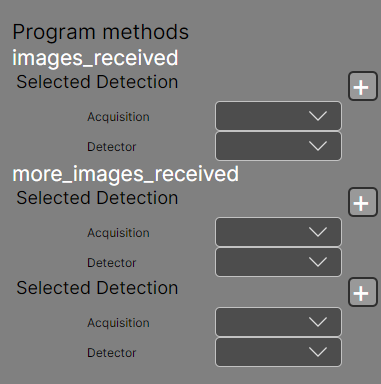
Practical Example: Conditional Acquisition
Consider an experiment with the following logic:
- Capture a Transmission image.
- Pass this image to the Smart Program to decide whether to continue.
- If approved, acquire a Time Series of two-channel data, streaming both channels to the program simultaneously for real-time analysis.
The resulting experiment tree would look like this:
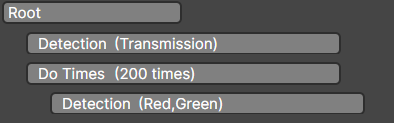
How to Link Detection Elements
- In the Smart Program tab, locate the
images_receivedfunction. -
Click the "+" icon next to the
Selected Detectionfield. This opens a dedicated selection window displaying your experiment tree: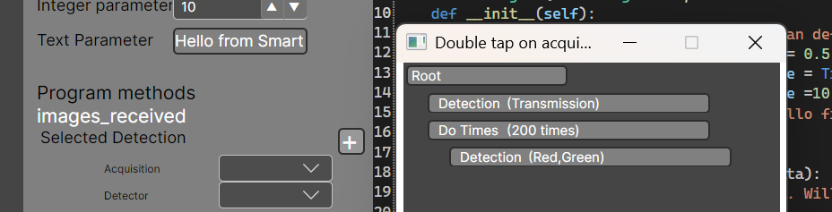
-
Double-tap the specific detection element you want to link (e.g.,
Detection(Transmission)). -
A colored square will appear both in the experiment tree and next to the function parameter in the Smart Program tab, confirming the link:
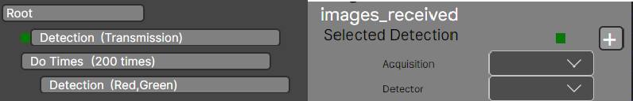
-
Configure Data Source: Use the dropdown menus to select the specific Acquisition Setting and Camera pair you wish to stream. The dropdown will only display acquisitions that are currently enabled for that Detection element.
You can repeat this procedure for functions requiring multiple inputs, such as more_images_received, to pipe multiple data streams into a single Python logic block.
The final configuration showing the linked experiment tree and program logic should look like this:
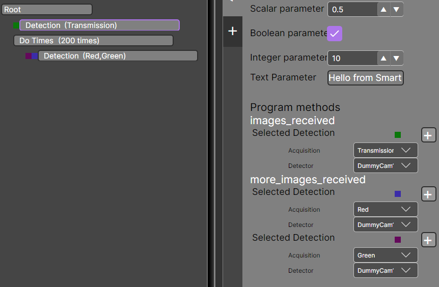
Within your Python code, images are received as ImagerData objects. For instructions on how to manipulate this data and how to link @onupdateacquisition decorators, please see the Smart Program API and the Updating Acquisition sections.
Linking the Smart Program Output
Now that we’ve covered how to pipe data into a smart program, let’s look at how to use the output of that program inside your imager experiment.
Smart Program Decisions
A smart program can emit four types of decisions, each corresponding to a different loop behavior:
def dotimes_decision_requested(self):
"""Returns a DoTimes decision."""
return super().dotimes_decision_requested()
def relative_stageloop_decision_requested(self):
"""Returns a RelativeStageLoop decision."""
return super().relative_stageloop_decision_requested()
def stageloop_decision_requested(self):
"""Returns a StageLoop decision."""
return super().stageloop_decision_requested()
def timelapse_decision_requested(self):
"""Returns a TimeLapse decision."""
return super().timelapse_decision_requested()
Linking Smart Program Decisions to Loop Elements
Each decision produced by a smart program can be used to populate the parameters of any loop element within the imager program.
For loop elements in the experiment tree, open the element’s settings and locate the Parameters from Program option:
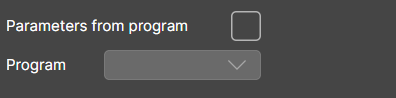
Enable this option, then select the desired smart program from the dropdown menu.
Once configured, the experiment element is successfully linked to the smart program output.
Supported Decision Types
Each decision function must return one of the following objects:
DoTimesRelativeStageLoopStageLoopTimeLapse
For details on constructing and returning these decision objects, see the
Smart Program API documentation.
Update Acquisition Parameter
The Update Acquisition mechanism is a specialized element that allows you to update a selected acquisition setting directly from your Smart Program.
Exposing an Update Function in Python
To expose a Python function that updates an acquisition setting, decorate it with:
@onupdateacquisition
By default, all arguments of this function are of type EquipmentParameter.
Similar to the @onimagesreceived decorator, any function decorated with @onupdateacquisition is automatically exposed in the GUI.
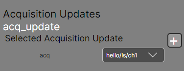
Coupling the Function to an UpdateAcquisition Element
Each exposed update acquisition function can be linked to an UpdateAcquisition element in the experiment tree by following these steps:
- Click the
+button next to the exposed function. - Select the UpdateAcquisition element from the experiment tree (double-tap).
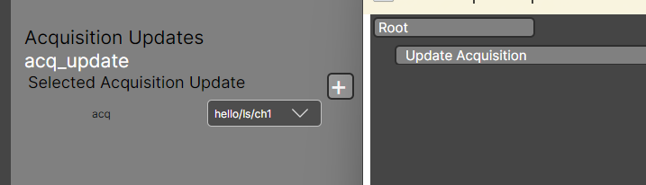
Once coupled, a colored rectangle appears next to the linked element, indicating a successful connection.
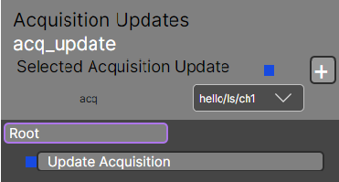
Selecting the Acquisition Setting
An UpdateAcquisition element can be linked to one acquisition setting only.
You can choose which acquisition setting to update from the element’s settings menu:
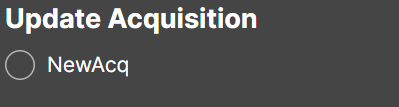
Parameter Mapping in the Smart Program
The UpdateAcquisition element is responsible for parsing the selected acquisition setting and passing it into the Python function decorated with @onupdateacquisition.
Which parameter is passed to the function can be configured from the GUI:
- Open the Smart Program tab.
- Locate the exposed function.
- Use the dropdown menu next to it to select a parameter path.
The dropdown contains:
- Paths to the light source
- Movable parameters available in the system
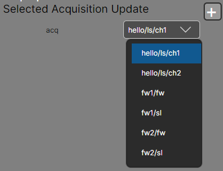
Once selected, the EquipmentParameter argument in your function will refer only to the parameter chosen from the dropdown.
Updating Parameters in Python
To learn how to modify acquisition parameters within your Python Smart Program, refer to the Smart Program API.
That’s it — your update acquisition workflow is now fully configured and ready to use.